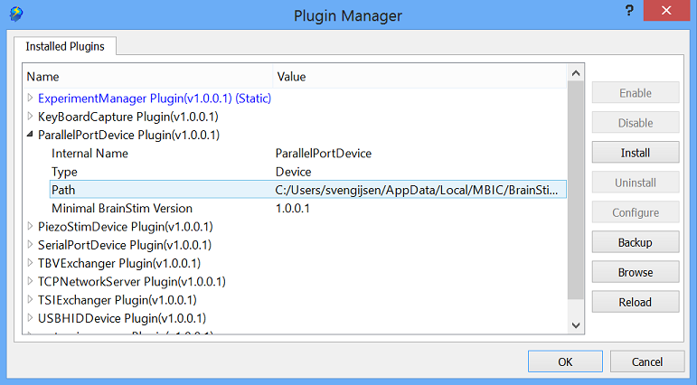

Default User-Interface
Document version: 1.0
Author(s): Sven Gijsen
Date: July 2015
Introduction
The default BrainStim User-interface contains a MenuBar,
ToolBar, Document Editing, OutputLog and a
StatusBar region:

User customizations
The User-Interface can be customized by the user, customizations can be resizing, repositioning and hiding/showing elements. All customizations are automatically saved for each document type to the Settings file seperately and reloaded/applied when a document of that type is opened/activated.
Dockable windows
BrainStim can contain one or more dockable windows, like the
OutputLog, that can be resized and moved around. You can resize these
dockable windows by hovering your mouse over the borders of that window
(the mouse icon changes) and then by using your left mouse button
together with some movements (drag) to fit its size to your needs. You can even
drag the dockable window so that it becomes a
free floating window, you can do this by left mouse click and hold the
docable window header title (like the 'Output Log' header title) and move it to somewere else and then release
your left mouse button again. You might have notice while moving around
the window that you can also move it to some predefined locations inside
the Brainstim main window. These dockable areas are located around the
left, top, right and bottom border of the Document Editing region.
Furthermore it's even posible to completely hide a dockable window
byusing your mouse and right click it's header and then uncheck it.
Important!
to show a dockable window again you can use your mouse and right click
on the ToolBar and then check the dockable window from
the list that appears again.
(Custom) Plugins may also implement additional dockable windows,
read this document
for more information about that topic.
Menu Bar
The default menu bar includes the following menu's:
| File/Directory | Description |
|---|---|
| File | contains commands for various file operations like opening, saving and printing files. |
| Edit | contains commands for the editing of files and search/replace features. Furthermore there are some additional commands for controlling the Output Log tab(s). |
| Window | contains commands for organizing, selecting and viewing one or more document(s). |
| Markers | contains commands for the management of markers that can be used to mark or quickly jump to one or more specific position(s) in a loaded document. |
| Document | contains commands for controlling the execution of various documents like script (*.qs) files. |
| Tools | contains an option command that lets you configure the BrainStim settings. |
| Plugins | contains commands for the loaded/embedded plug-ins in BrainStim. With these commands you can open the plug-in's User Interface. Plug-ins are automatic divided in Extension and Device plug-ins. You can also open the Plugin Managers dialog from this menu. |
| Help | contains commands for opening the BrainStim help and viewing release information about BrainStim. |
The default menu bar can be extended by implementing one or more menu configuration files, read this document for more infomation about this topic.
File/document handling
BrainStim can open and edit type of files, see this document for more information about this topic. To open a file in BrainStim you can simply drag/drop the file from a Windows File Explorer to the Document Editing Region, or use the menu entry File > Open... (CTRL + o key combination) and then select the file(s) you wish to open. The last 10 opened file(s) are also listed in the File menu and can be easily re-opened by using one of these menu entries. Saving a file can be performed by using the menu entry File > Save... (CTRL + s key combination) if no file path has yet been set then you'll be asked to do so. If you try close a file that has been changed then you're also automatically asked if it should be saved first. Creating a new file can be done using the menu entry File > New... and then choosing a specific file type. BrainStim automatically detects the file type and optimizes the User-Interface suit the editing of this file type, read this document for more information about this topic.
Document windows
BrainStim is a multiple document editor, meaning that it can open and edit multiple (different) files simultaneously in seperate documents. Each document has it's own Document Editing window and they can be activated by selecting them using the tabular bar right above the Document Editing region. You can also swith between them using the Window > Next or Window > Previous menu entry, or by selecting one of them from the list of opened documents inside the Window menu. After you activate (or open) a new document BrainStim will automatically adapt it's User-Interface to that document type, read this document for more information about this topic.
Code editing
BrainStim makes use of a internal Code editor for the editing of document types that are text-based (that could be some kind of source code), like the QtScript file (*.qs) document type. Depending on the file type this code editor is automatically customized to support that type of file type editing. Some features are by default implemented like:
- Automatic line numbering in front of each line.
- Showing some information about the file and the position of the cursor in StatusBar.
- Enabling the use of markers, see below.
Markers
Inside the internal Code Editor you can add/remove markers by clicking the line number to toggle it on/off. You can also do this using the menu entry Markers > Add/Remove marker (F2 key). After adding a marker you can see a small triangular item in front of the current line number and a new entry in the list of current markers in the Markers menu. If you select such an entry then the cursor will automatically jump to the position of that marker which makes it easy to jump from one stored location in a document to another instead of scrolling and searching through the documents content. Furthermore the menu entries Markers > Next marker (F4 key) and Markers > Previous marker (F6 key) are ideal for switching quickly back and forth through the custom added markers.
Output Log window
The Output Log window is by default visible and located in the lower part of the BrainStim User-Interface, this can be customized (see the User customizations chapter above for more information about this topic). The Output Log window can contain multiple sub-windows that can be selected individually by the use of a tabular selection bar. By default there's only one sub-window available under the name 'Default'. Read this document for more information about how to control this Output Log window from a script. The menu Edit > Output Log contains several commans for working with the Output Log window, alternatively you can right click with you mouse in a sub-window to show a menu of commands.
Executing a document
BrainStim has the ability to execute a document using the F5 key or the menu entry Document > Execute. This feature is not always available. Depending of the document type (by file extension) and of if there's a execution routine implemented by BrainStim or one of it's Plugins for that document type this option may be available. If not then the Execute Menu entry and ToolBar button are disabled. Read this document for more information about this topic. Sometimes it can happen that this Execute button stays disabled after execution of your (QtScript *.qs) script (although it seems that your script did what you expected it to do). You cannot execute the script again because the Execute button is disabled. When this happens you probaly didn't follow the guidelines for a automatic garbage collection, read this document for more information about this topic. To enable the execute button again you can try to abort the script first by using the F7 key or the menu entry Document > Abort. If this still doesn't work you can use the the F9 key or the menu entry Document > Restart Script Engine to completely restart the internal Script Engine.
Options
There are several options available in BrainStim that let you configure the program, you can read this document for more information about this topic.
Plugins
BrainStim supports the use of plugins that can extend and make use of BrainStim features using a Plugin Framework, read this document for more information about this topic.
A plugin can implement a custom dialog that is available by clicking a menu entry inside the menu Plugins > Extension Plugins or Plugins > Device Plugins depending on the type of the Plugin. This dialog together with it's underlying functionality is completely implemented by the plugin itself. A standard BrainStim installation contains some default plugins that are automatically installed together with BrainStim, read this document for more information about these default plugins.
Plugin Manager
By using the menu entry Plugins > Plugin Manager (or using the CTRL + ALT + p key combination) you can open the Plugin Manager which allows you to manage the current plugins or install (a) new plugin(s).

This dialog contains a hierarchical list that contains all the detected plugin(s) during the startup of BrainStim. Each item can be expanded for more detailed information about the plugin. The listed dynamic plugins are actually files (dynamic libraries (*.dll)) stored in the Plugins directory inside the Main Program directory except for those marked in the blue color and the (Static) post-text, these are the so called static plugins. These static plugins are implemented inside the BrainStim executable. All Plug-ins are grouped in either Device or Extension plugins.
The below table explains where the buttons on the right part of the dialog can be used for:
| Button | Description |
|---|---|
| Enable | A disabled plugin can be enabled by selecting this plugin in the list and enable it again by using this button. |
| Disable | This button allows you to disable a plugin that is selected in the list, BrainStim then automatically skippes the plugin from loading at startup. Newly installed plugins are automatically enabled. If they are manually disabled the text of the plugin in the list colors red and a Disabled: pre-text is appended. |
| Install | This buttons allows you to install a single or more plugins. You first need to browse to and select a Plugin Configuration File (*.ini) for a single plugin installation or a Compressed Install Package file (*.zip) that contains one or more Plugin Configuration Files (*.ini). |
| Uninstall | This button allows you to completely remove/uninstall a plugin. You first need to select the plugin from the list which you would like to uninstall and then click this button. |
| Configure | This option is only for advanced users. If you select a plugin from the list and click this button then the dialog closed and BrainStim opens the Plugin Configuration File (*.ini) from that plugin. |
| Backup | This option can be used for making a backup by creating a Compressed Install Package file (*.zip) of all of the currently installed plugins, you can select the name and location of the backup. |
| Browse Dir | This directory contains XML Schema (*.xsd) files, which let BrainStim validate experiment (*.exml) files. It is used to express a set of rules to which an experiment must conform in order to be considered 'valid' according to that schema. |
Help
You can always open the Help documentation by using the F1 key or the menu entry Help > Help Contents. This local help is completely offline available and you can use custom keywords to search for a specific topic for which you need help. This help contains the BrainStim help content including that of the default plugins, furthermore if you installed some additional 3rd party plugins than this documentation (if provided by the plugin) is also available here.There's also an online version of this Help, use this link to open the online Help collection. This online collection only contains the documentation for the latest release of BrainStim and it's default plugins, 3rd party plugins can provide thier own online documentation somewhere else. By using the menu entry Help > About BrainStim you can open a dialog that shows the current version and licensing information for the currently installed version. BrainStim is build making use of the Open Source Qt libraries, to view information regarding the used Qt versions and licenses you can use the menu entry Help > About Qt.